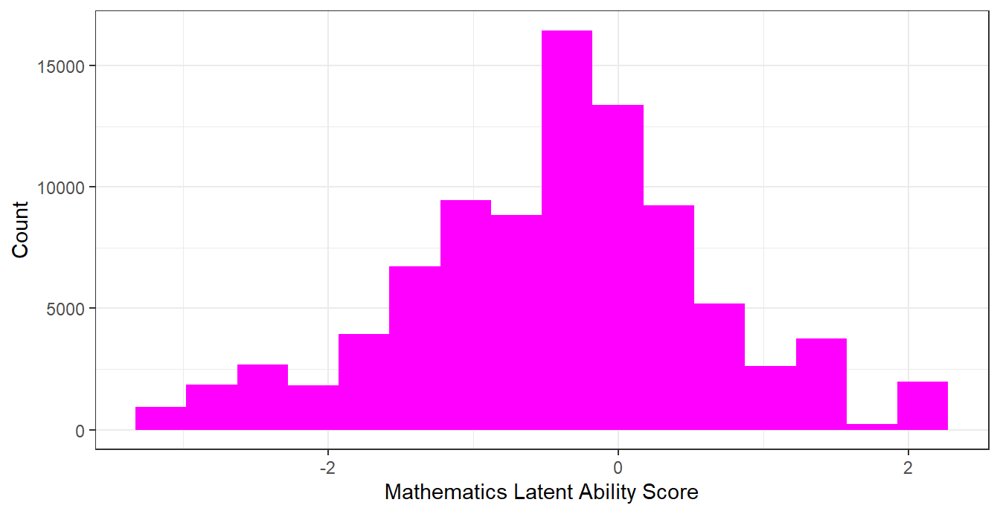

Chapter 8 Central Tendency and Dispersion
Descriptive statistics summarise data in ways that support interpretation and comparison. In household surveys such as PAL Network’s ICAN-ICAR study, you should compute these summaries with survey weights and design variables when your goal is population inference.
After this chapter, you should be able to (i) compute and interpret measures of central tendency (mean, median, and mode), (ii) compute and interpret measures of dispersion (variance, standard deviation, and interquartile range), and (iii) produce weighted, design-correct summaries in R.
8.1 Central tendency
Measures of central tendency describe a “typical” value.
Mean. The mean is the arithmetic average. It uses all observations and is sensitive to extreme values.
Median. The median is the 50th percentile. It remains stable when a small number of observations are very large or very small, so it is often more informative for skewed distributions.
Mode. The mode is the most common value. It is most useful for categorical variables.
The next example uses mathematics IRT score as a continuous variable.
## Min. 1st Qu. Median Mean 3rd Qu. Max.
## 1.016666666666669938 2.700000000000000178 4.900000000000000355 6.512924993037579213 7.616666666666669805 709.716666666667038044
## NA's
## 23441tibble(
statistic = c("mean", "median"),
value = c(
mean(dat$MathIRTScore, na.rm = TRUE),
median(dat$MathIRTScore, na.rm = TRUE)
)
) ## # A tibble: 2 × 2
## statistic value
## <chr> <dbl>
## 1 mean -0.416
## 2 median -0.347A distribution plot helps you interpret the difference between the mean and the median. When the distribution is right-skewed, a small number of large values typically pulls the mean above the median.

Figure 8.1: Histogram of Mathematics IRT Score
To compute a mode for a categorical variable, count frequencies and select the largest count.
## # A tibble: 1 × 2
## residence n
## <fct> <int>
## 1 Rural 542308.2 Dispersion
Measures of dispersion describe how much values vary.
Variance and standard deviation. The variance is the average squared deviation from the mean. The standard deviation is the square root of the variance, so it is measured on the original scale.
Interquartile range (IQR). The IQR is the distance between the 75th and 25th percentiles. It summarises spread in the middle of the distribution and is less sensitive to outliers than the standard deviation.
tibble(
statistic = c("sd", "IQR"),
value = c(
sd(dat$MathIRTScore, na.rm = TRUE),
IQR(dat$MathIRTScore, na.rm = TRUE)
)
)## # A tibble: 2 × 2
## statistic value
## <chr> <dbl>
## 1 sd 1.05
## 2 IQR 1.278.3 Weighted, design-correct summaries
Unweighted summaries describe the sample. Weighted, design-correct summaries target the population and use appropriate standard errors for a stratified, clustered design.
The code below estimates the population mean of ICAR assessment time for one country using the survey design object. It also computes the median through a weighted quantile.
des_country = subset(des, CountryName == "Kenya" & !is.na(MathIRTScore))
m = svymean(~MathIRTScore, design = des_country, na.rm = TRUE)
q50 = svyquantile(~MathIRTScore, design = des_country, quantiles = 0.5, na.rm = TRUE)
tibble(
quantity = c("mean (weighted)", "median (weighted)"),
estimate = c(coef(m)[["MathIRTScore"]], coef(q50))
)## # A tibble: 2 × 2
## quantity estimate
## <chr> <dbl>
## 1 mean (weighted) 0.0281
## 2 median (weighted) -0.0229To compare groups, use svyby() so that estimates and standard errors respect the design.
8.4 Outliers and the unit of analysis
In ICAN-ICAR 2025, some variables are defined at the household level (for example, household size). When the data includes multiple children per household, household-level quantities appear repeatedly. A household summary should therefore use one row per household.
The code below constructs a household-level dataset by keeping the first observation in each household. It then shows how an outlier can affect the mean more than the median.
dat_hh = dat |>
group_by(HHID) |>
slice(1) |>
ungroup() |>
mutate(
hh_size = ifelse(hh06a > 0 & hh06a <= 80, hh06a, NA_real_) # simple, transparent cutoff
)
tibble(
statistic = c("mean", "median"),
value = c(
mean(dat_hh$hh_size, na.rm = TRUE),
median(dat_hh$hh_size, na.rm = TRUE)
)
)## # A tibble: 2 × 2
## statistic value
## <chr> <dbl>
## 1 mean 6.31
## 2 median 5If a small number of extreme values drives the mean away from the typical household size, the median or the IQR usually provides a clearer summary of the distribution.
8.5 Practice exercises
- For a country of your choice, compute the unweighted mean and median of
icar_assess_time. Then compute the weighted mean and weighted median usingsvymean()andsvyquantile(). - Use
svyby()to estimate the weighted mean ICAR assessment time byresidencefor one country. Interpret the difference. - For household size (
hh06a), compare the mean and median using the household-level dataset created in this chapter. Explain which measure better represents a “typical” household size and why. - Choose one additional continuous variable (for example, child age
ch02). Compute its mean, median, standard deviation, and IQR, and then describe the distribution in two to three sentences.